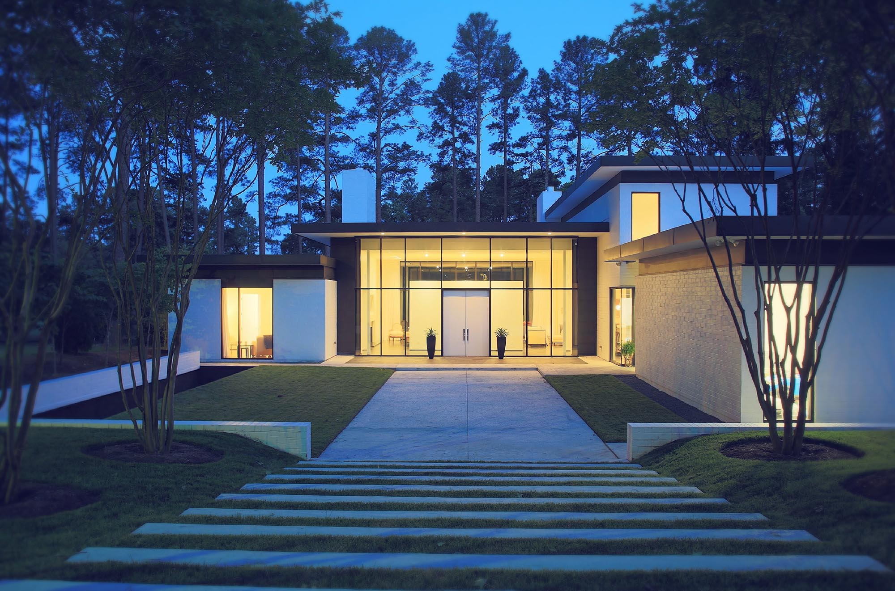
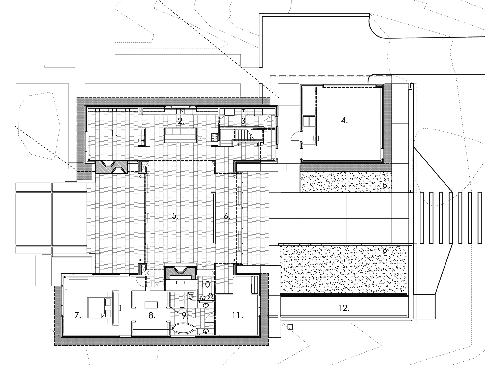
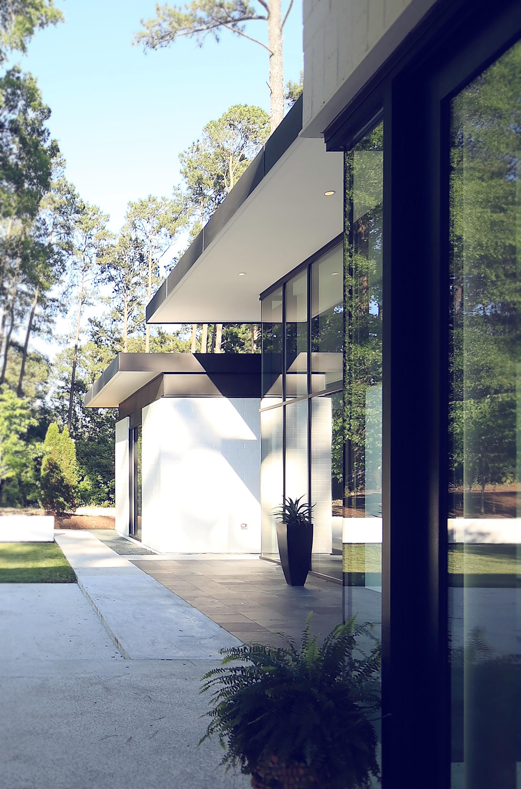
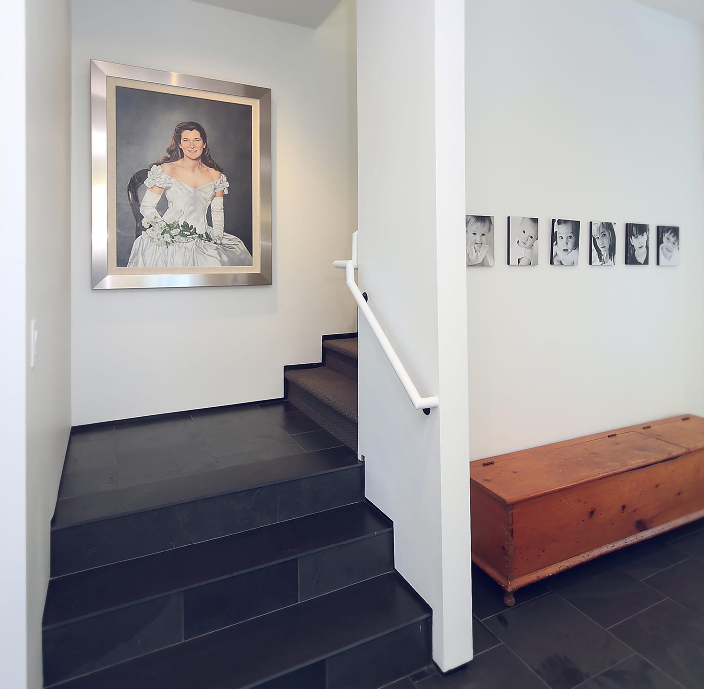
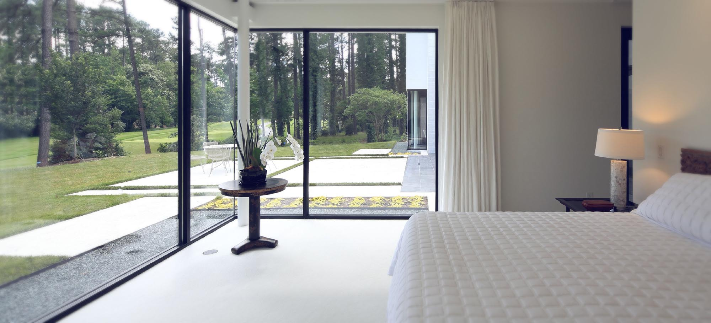
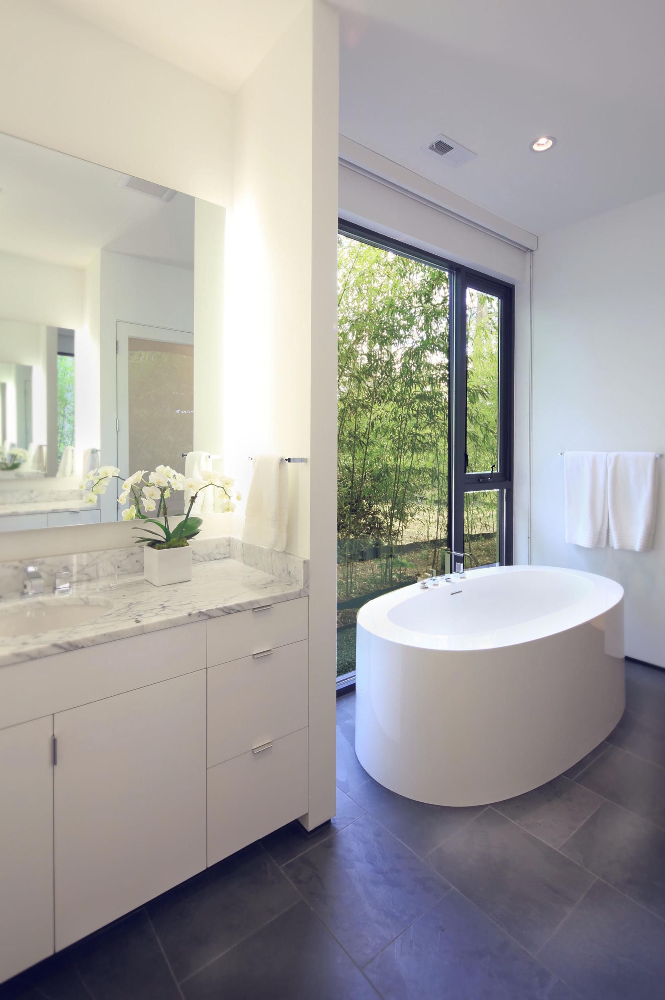

Photographs taken by Jim Sink.
(Click images to zoom. Click circle to return to top.)
(Click images to zoom. Click circle to return to top.)



The central glass-enclosed space is modeled after the traditional dog run, straddling two masses: a bedroom wing to the south and a kitchen and library to the north.





